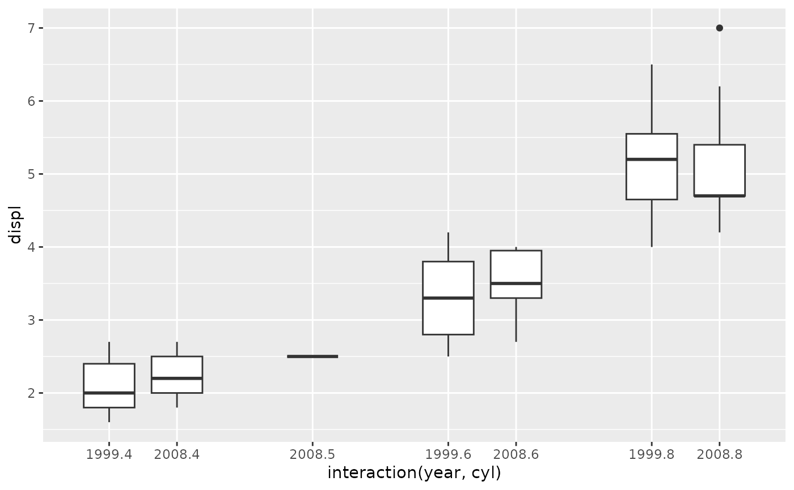
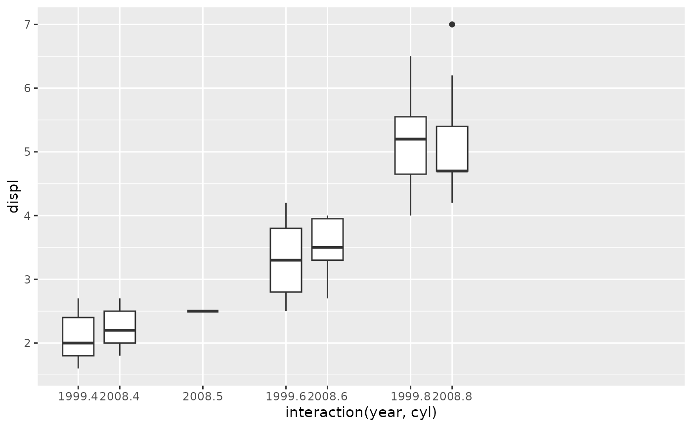
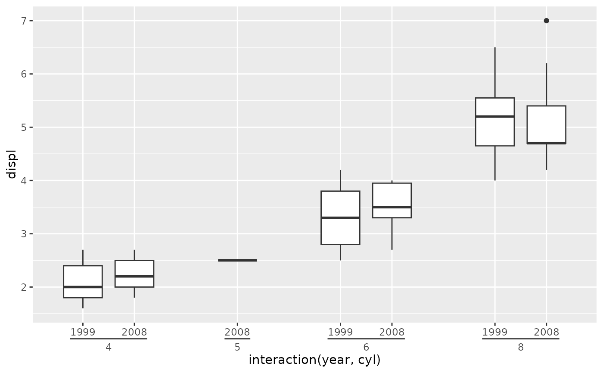

![[Experimental]](figures/lifecycle-experimental.svg)
scale_x_manual() and scale_y_manual() are hybrid discrete and continuous
position scales for the x and y aesthetics. These accept input like
discrete scales, but may map these discrete
values to continuous values that needn't be equally spaced.
Usage
scale_x_manual(values, c_limits = NULL, position = "bottom", ...)
scale_y_manual(values, c_limits = NULL, position = "left", ...)Arguments
- values
A
numericvector with the same length as unique values. Alternatively, a function that accepts the limits (unique values) as determined from the data and returns anumericvector parallel to the input.- c_limits
Either
NULL(default) to accept the range ofvaluesas the continuous limits, or anumeric(2)to set custom continuous limits.- position
For position scales, The position of the axis.
leftorrightfor y axes,toporbottomfor x axes.- ...
Arguments passed on to
ggplot2::discrete_scalescale_name![[Deprecated]](figures/lifecycle-deprecated.svg) The name of the scale
that should be used for error messages associated with this scale.
The name of the scale
that should be used for error messages associated with this scale.nameThe name of the scale. Used as the axis or legend title. If
waiver(), the default, the name of the scale is taken from the first mapping used for that aesthetic. IfNULL, the legend title will be omitted.breaksOne of:
labelsOne of:
NULLfor no labelswaiver()for the default labels computed by the transformation objectA character vector giving labels (must be same length as
breaks)An expression vector (must be the same length as breaks). See ?plotmath for details.
A function that takes the breaks as input and returns labels as output. Also accepts rlang lambda function notation.
limitsOne of:
NULLto use the default scale valuesA character vector that defines possible values of the scale and their order
A function that accepts the existing (automatic) values and returns new ones. Also accepts rlang lambda function notation.
expandFor position scales, a vector of range expansion constants used to add some padding around the data to ensure that they are placed some distance away from the axes. Use the convenience function
expansion()to generate the values for theexpandargument. The defaults are to expand the scale by 5% on each side for continuous variables, and by 0.6 units on each side for discrete variables.na.translateUnlike continuous scales, discrete scales can easily show missing values, and do so by default. If you want to remove missing values from a discrete scale, specify
na.translate = FALSE.na.valueIf
na.translate = TRUE, what aesthetic value should the missing values be displayed as? Does not apply to position scales whereNAis always placed at the far right.dropShould unused factor levels be omitted from the scale? The default,
TRUE, uses the levels that appear in the data;FALSEincludes the levels in the factor. Please note that to display every level in a legend, the layer should useshow.legend = TRUE.guideA function used to create a guide or its name. See
guides()for more information.callThe
callused to construct the scale for reporting messages.superThe super class to use for the constructed scale
Details
Many thanks to Constantin Ahlmann-Eltze for discussion and suggesting the adoption of this functionality in ggh4x.
Note
There currently is a known bug wherein a c_limits cannot be applied
correctly when that range is within the range of the discrete limits.
Examples
# A boxplot with interactions
p <- ggplot(mpg, aes(interaction(year, cyl), displ)) +
geom_boxplot()
# Manually setting positions
p + scale_x_manual(values = c(1, 2, 4, 6, 7, 9, 10))
# Using a function to separate grouped labels
p + scale_x_manual(values = sep_discrete())

# Expanding the continuous limits
p + scale_x_manual(values = sep_discrete(), c_limits = c(NA, 15))

# Together with grouped axis
p + scale_x_manual(values = sep_discrete(), guide = guide_axis_nested())
